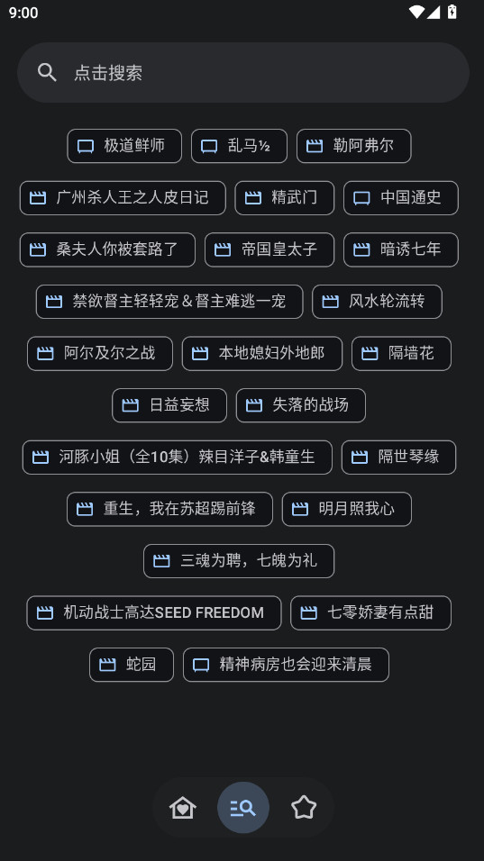
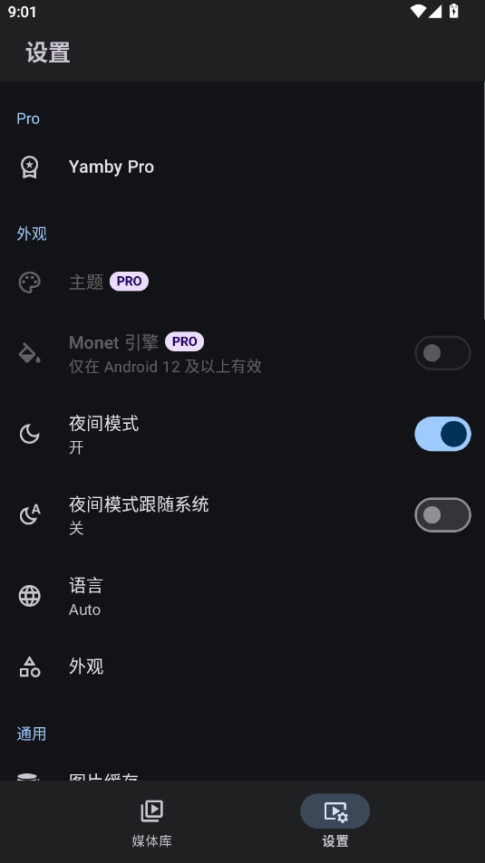

换了三台手机，Yamby 还在我主屏幕上
从 Emby 官方客户端逃到 Yamby 大半年，说点时间才能晒出来的真感受——MD3 设计、缓存手感、4K 播放那些当初没注意的细节，慢慢都显形了。
装 Yamby 到现在快九个月了，换了三台手机它都留在主屏幕的同一格位置。当初从官网了解到它是 Emby 客户端里最早完整跟进 MD3 的，就换掉了用了两年的官方客户端——那套老派设计实在腻了。
变化一：越用越顺手的地方
最明显的是图片缓存。第一次进媒体库加载那批海报墙的时候我还嘀咕「怎么还没出来」，第二次秒开——后来才知道它默认 256MB 的缓存上限、7 天过期策略，1000 部影片的库命中率能到 90% 以上。缓存文件按服务器图片 API 链接的 MD5 哈希存，不同服务器的图不冲突，这点做得出乎意料地细致。
后来发现 Yamby 是 Emby 客户端里最早完整跟进 MD3 的。大圆角卡片、动态取色跟壁纸走、更大的触摸目标——这些设计决策不是好看而已。单手操作时误触率明显降低，平板横屏自动扩展多列不浪费屏幕空间，折叠屏响应式布局也有考虑。底部导航四个固定入口（媒体库、搜索、收藏、设置）一开始觉得少，用久了才感激这种克制：所有功能在四栏里组织，不会出现层级过深翻半天找不到设置的情况。

变化二：慢慢暴露的烦人事
缓存的过期机制有时候反而是个坑。Emby 服务器上管理员改了封面图，Yamby 客户端不会立刻看到——本地缓存里存的还是旧图。等七天自然过期太慢了，手动刷新的入口藏得比较深：长按封面才能调出来「刷新图片」选项。我有两次以为服务器没同步，折腾半天原来是缓存的问题。
4K 播放的卡顿排查也得花点功夫，对照Yamby文档里的排查步骤一条条来才快。Yamby 长按下能调出播放信息面板，里面显示硬解/软解、帧率、码率、CPU 占用、转码状态。我那台老骁龙 845 的手机 HEVC 硬解能力有限，软解 4K 时开视频滤镜 CPU 直接 100%，关了锐化反交错才能流畅。公网播放还得算带宽，把最大播放码率调到实际带宽的 70% 才稳。这些都不是 bug，但新手第一次碰 4K 大概率会卡。
还有安装渠道的问题。Google Play 下架后，安装包从官方下载或官方 Telegram 频道获取，第三方下载站可能捆绑广告。权限倒是按需授予就行，拒绝非必要权限不影响核心功能——这点做得到位，但安装来源得自己盯紧。
变化三：哪部分已成依赖、哪部分再也没碰过
每天必用的是首页推荐区的「继续观看」，断点续播能记住精准到秒。全局搜索支持模糊匹配，找一部冷门片不用翻分类。收藏栏也常开着，把常看的剧放进去比在媒体库里翻快多了。
Pro 功能区我到现在没开通，也没感到有啥必须的。画中画权限开了但很少用——我习惯看完一部再开下一部，边看边干别的场景没那么多。

观感修正：当初高估和低估了什么
高估了什么：MD3 动态取色。刚装上那会儿觉得「跟着壁纸变色」特别酷，实际上一周后就审美疲劳了——换了三四次壁纸，Yamby 的界面每次都来一遍新配色，反而觉得不如固定主题稳。现在反而更怀念 Emby 官方那种不变的色调，不会因为换了一张壁纸突然觉得应用很陌生。
低估了什么：按需授予权限这件事。Yamby 不会一上来就要全部权限，网络、存储、画中画、通知都是用到的时候才弹。之前用过几款别的客户端，首次启动就弹一堆权限请求，不给就不让进。这种克制在 Android 生态里真的少见，也让我对这个开发者的做事风格多了几分信任。
去留结论
短期不会卸载。主要原因是缓存手感——换了三台手机每台第一次用 Yamby 加载完媒体库后，第二次打开的秒开体验就留下来了，这个细节太实在。4K 播放的问题我也摸清楚了，设备升级后应该不是瓶颈。
什么信号出现就该换？两个：一是 Emby 官方客户端哪天终于更新到 MD3 设计并解决掉我积累的那些小抱怨，二是 Yamby 的开发者突然跑路不再维护——不过从官方 Telegram 频道还在正常发版来看，暂时不用担心。
现在回想当初装 Yamby 的理由就一个「换个新设计看看」，九个月后留下的却是一堆时间才能发现的细节。这类 Android 客户端的魅力大概就在这：不靠花哨功能，靠每天都要按的那些按钮、每天都要看的那些海报、每天都要等的那些加载时间——时间久了，手感比啥都重要。顺便提一句，我整理的这类客户端资料分别放在 GitHub、Gitee 和 GitCode，国内访问各有优势。